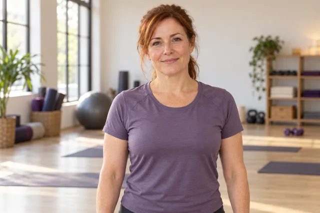

GETYOURMENTOR / NOUVEAU POINT DE VUE
Tes mentors.
Sous un autre angle.
Un manège à cinq faces : tourne à gauche ou à droite pour découvrir un profil ou une étape utile. Tu peux continuer après chaque tour.
LE CATALOGUE, EN RELIEF
Navigation manuelle · sans lecture automatique
TON SPORT, TON TERRAIN
Le bon profil.
Pour ton objectif.
01Choisis ta discipline et ta ville.
02Compare les spécialités et les tarifs affichés.
03Consulte la fiche avant de proposer un créneau.
Explorer les disciplines DU CHOIX À LA SÉANCE
Demander.
Puis confirmer.
01Propose un à trois créneaux.
02Le coach accepte ou refuse.
03Paiement après acceptation.
Démo : aucune réservation ni aucun paiement réels.
Comprendre le parcoursPrototype isolé : les carrousels du site restent inchangés. Les trois profils et leurs tarifs sont issus du catalogue de démonstration ; les portraits sont des illustrations IA. Les deux autres faces reprennent les étapes du parcours existant.